A ERA PSICODÉLICA
1967 - 1969
The Piper at the Gates of Dawn
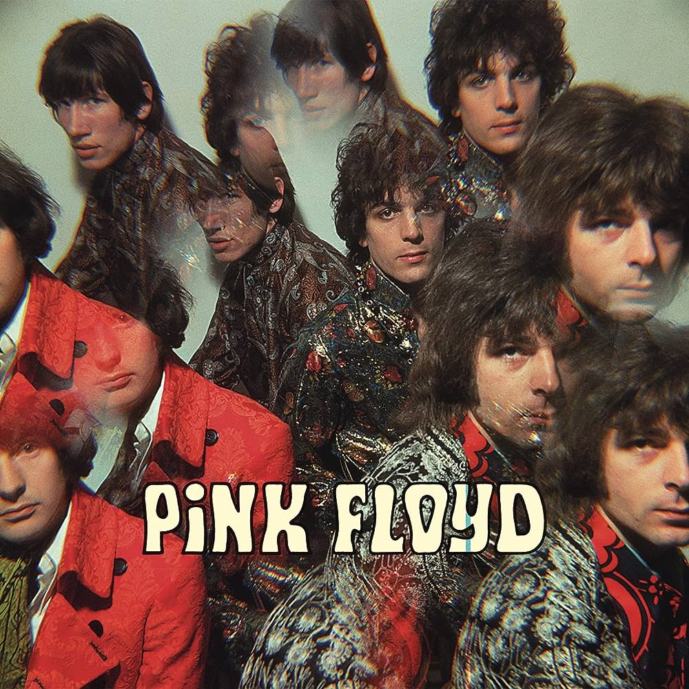
- Lançamento: 1967
- O primeiro álbum de estúdio lançado pela banda britânica Pink Floyd, quando seu estilo musical ainda era muito mais puxado para a psicodelia.
- É considerado um dos melhores álbuns da história da música psicodélica.
- Único álbum da banda feito sob a liderança de Syd Barrett.
A Saucerful of Secrets
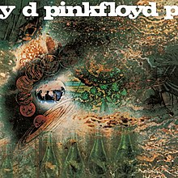
- Lançamento: 1968
- O álbum marca a transição da banda após a saída de Syd Barrett e a entrada de David Gilmour.
- Explora técnicas inovadoras de gravação e efeitos sonoros, usando o estúdio como instrumento musical.
- O álbum é apreciado até hoje como um clássico da história do rock progressivo e psicodélico.
More
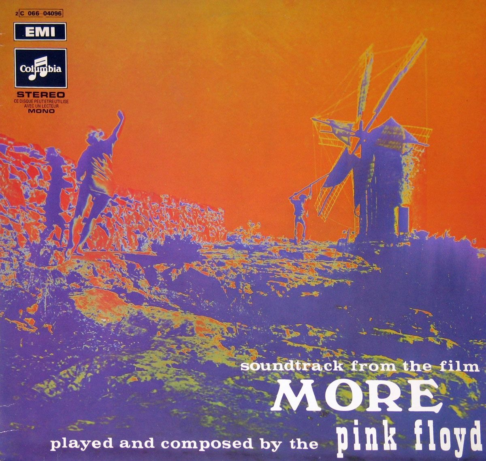
- Lançamento: 1969
- Álbum criado como trilha sonora para o filme francês "More"
- Apresenta uma variedade de estilos musicais, desde rock psicodélico até músicas acústicas e experimentais.
- Destaca-se pela faixa "The Nile Song", uma das poucas músicas mais pesadas do Pink Floyd.
Ummagumma
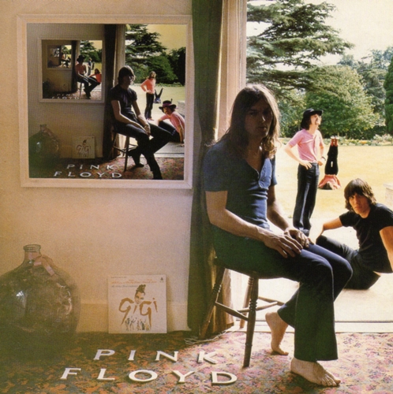
- Lançamento: 1969
- O álbum duplo é composto de duas partes, uma contém gravações ao vivo e a outra uma coleção de faixas gravadas individualmente pelos membros da banda.
- A parte ao vivo conta com versões de músicas anteriores, como "Astronomy Domine" e "Careful with That Axe, Eugene".
A ERA DE TRANSIÇÃO
1970 - 1972
Atom Heart Mother

- Lançamento: 1970
- O quinto álbum de estúdio da banda é ainda mais experimental, sua faixa-título consiste no Lado A inteiro do álbum, com 23 minutos.
- "Atom Heart Mother" recebeu críticas variadas na época do seu lançamento, mas ao longo dos anos, ganhou status de cult e é apreciado por muitos fãs do Pink Floyd.
Meddle
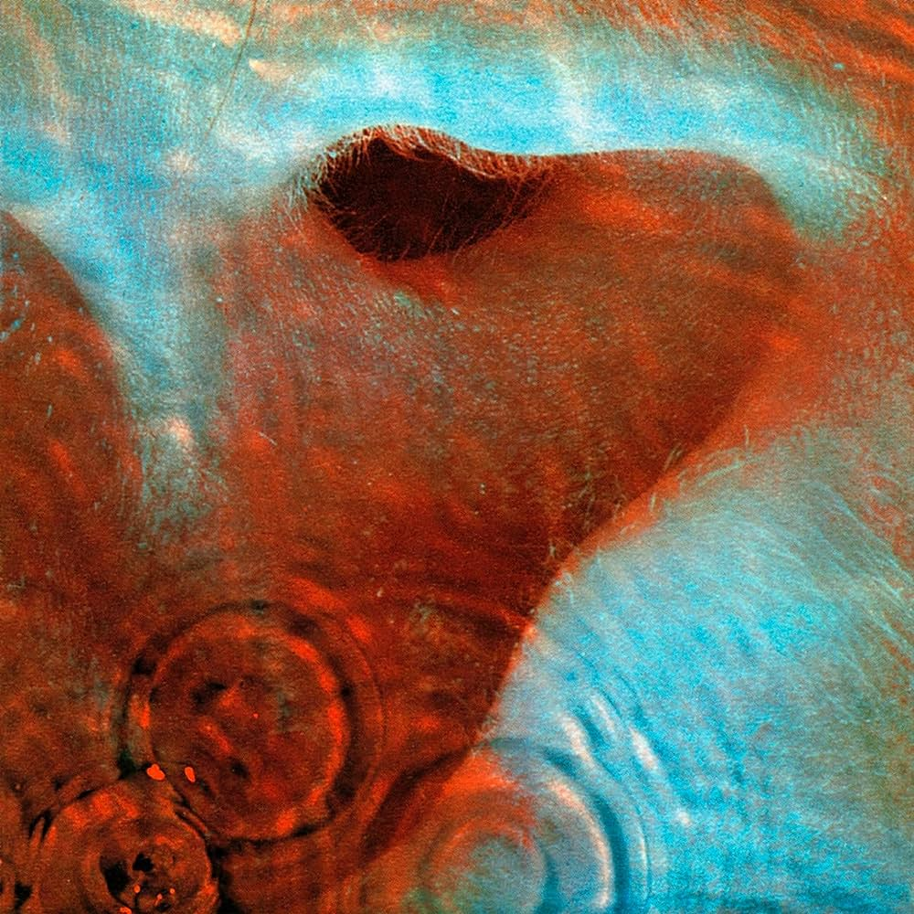
- Lançamento: 1971
- O disco Meddle é principalmente reconhecido pela faixa "Echoes", uma das mais aclamadas músicas da banda até hoje.
- O álbum foi muito importante para a transição da banda para o som característico da era de ouro da banda.
Obscured by Clouds
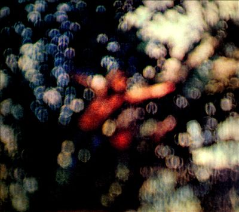
- Lançamento: 1972
- O álbum foi produzido como trilha sonora para o filme "La Vallée".
- Preparação para "The Dark Side of the Moon": "Obscured by Clouds" é frequentemente visto como um prelúdio para o álbum icônico "The Dark Side of the Moon", lançado no ano seguinte.
A ERA DE OURO
1973 - 1977
The Dark Side of the Moon

- Lançamento: 1973
- É um dos álbuns mais icônicos e influentes da história do rock.
- Obra-prima conceitual: "The Dark Side of the Moon" é uma obra-prima conceitual que aborda temas como a vida, a morte, o tempo, a loucura e a ganância.
- Isso é bom demais.
Wish You Were Here
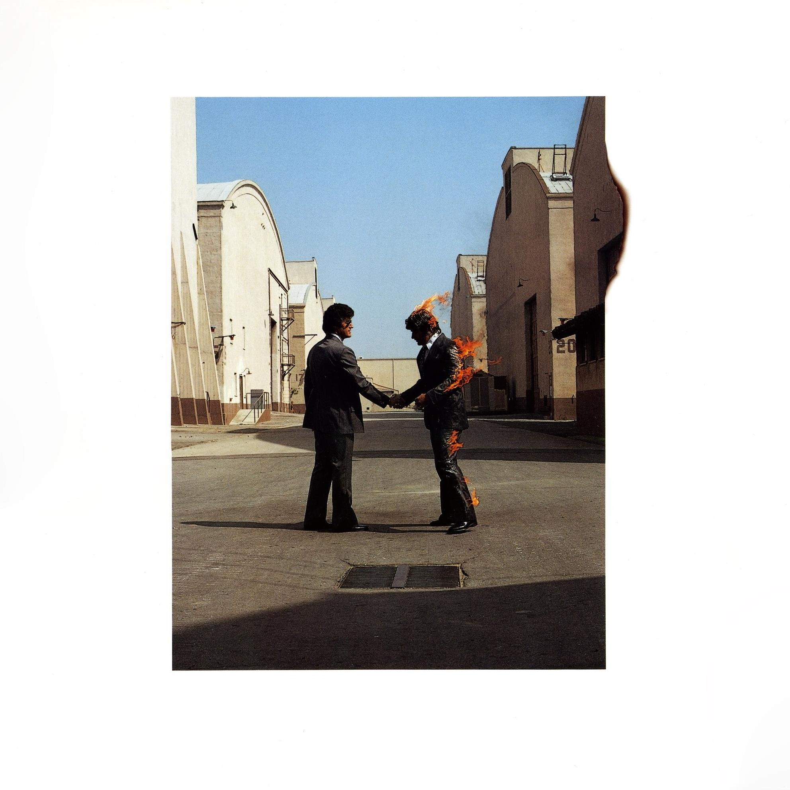
- Lançamento: 1975
- O álbum é uma homenagem ao ex-membro da banda Syd Barrett, que deixou a banda em 1968 devido a problemas de saúde mental. A faixa-título, "Wish You Were Here", expressa sentimentos de saudade à Barrett. É amplamente considerado uma das maiores conquistas da história do rock. A mistura de música complexa, letras poéticas e atmosferas emocionais o torna uma experiência profunda e atemporal.
Animals
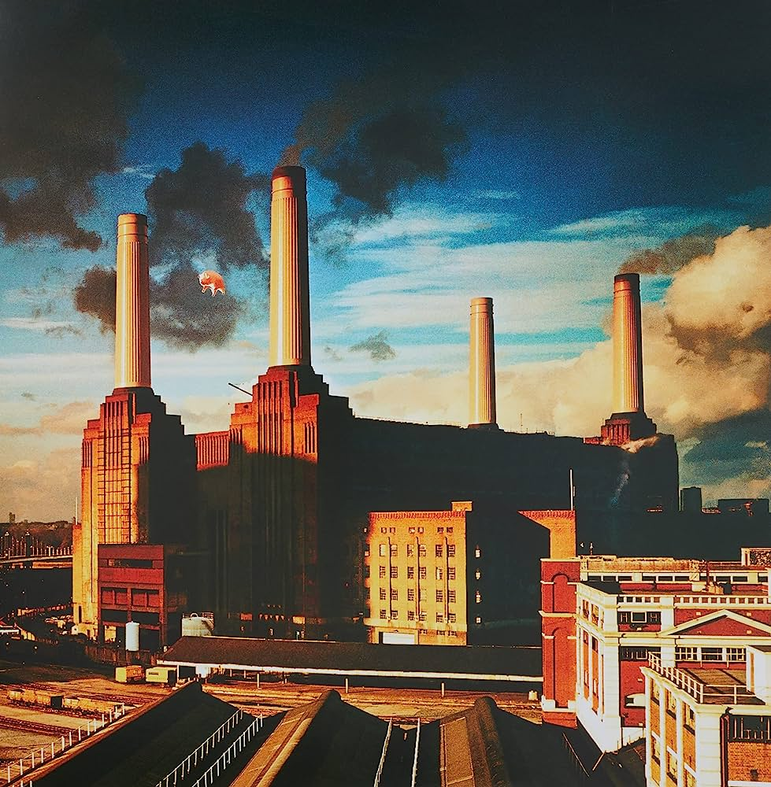
- Lançamento: 1977
- O álbum inspirado em "A revolução dos bichos" divide a sociedade entre porcos (representando a ganância e a corrupção), ovelhas (representando a passividade e a conformidade) e cães (representando a ambição e desconfiança).
- As músicas possuem uma forte crítica à natureza humana e à sociedade.
A ERA WATERS
1979 - 1983
The Wall

- Lançamento: 1979
- O disco duplo é um dos álbuns mais ambiciosos da banda. Seu conceito central gira em torno do personagem Pink, um músico de rock, desde sua infância até sua queda emocional, construindo uma parede emocional para se isolar do mundo.
- O álbum inspirou um filme de mesmo nome lançado em 1982, dirigido por Alan Parker e escrito por Roger Waters.
The Final Cut
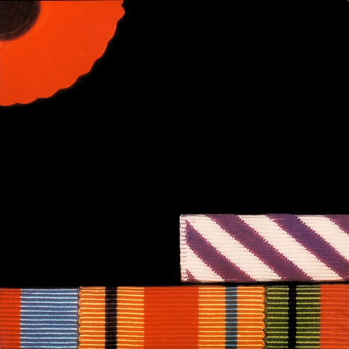
- Lançamento: 1983
- The Final Cut foi o último álbum liderado por Roger Waters, que saiu da banda em 1985.
- Musicalmente e conceitualmente, "The Final Cut" é visto como uma continuação de "The Wall". Muitas das músicas foram originalmente escritas para serem incluídas em "The Wall", mas acabaram não sendo usadas.
A ERA GILMOUR
1987 - 2014
A Momentary Lapse of Reason
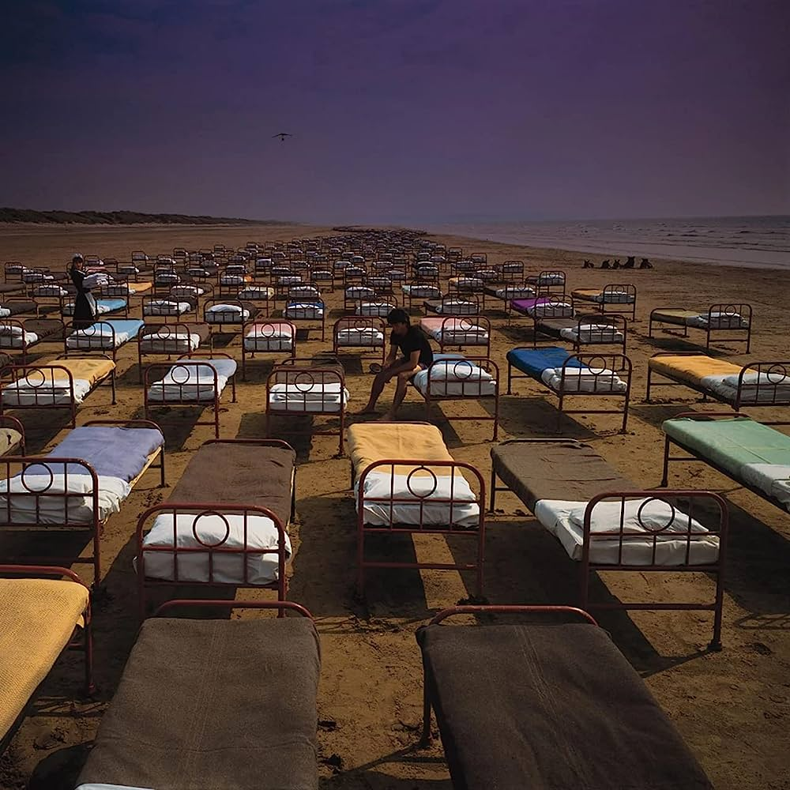
- Lançamento: 1987
- O disco marca o retorno de David Gilmour como líder criativo do grupo.
- O disco foi marcado pelo uso extensivo de novas tecnologias musicais, como sintetizadores, samplers e sequenciadores MIDI, possibilitando que a banda explore novas sonoridades e texturas.
The Division Bell
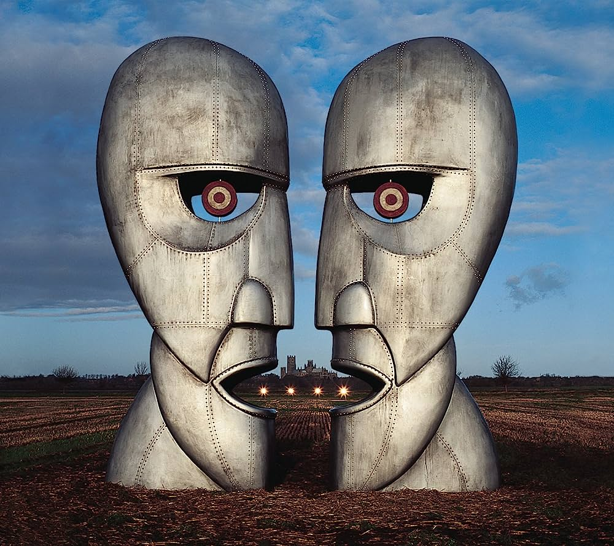
- Lançamento: 1994
- "Division Bell" é um álbum conceitual que aborda temas de comunicação e desconexão entre as pessoas.
- O disco foi um sucesso comercial e atingiu o topo das paradas em vários países. O álbum apresenta faixas muito aclamadas como "High Hopes".
The Endless River
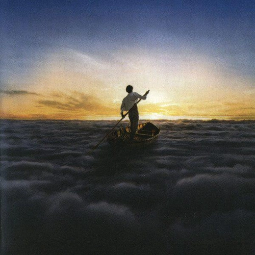
- Lançamento: 2014
- O 15º e último álbum de estúdio do Pink Floyd é um tributo ao legado da banda.
- É um álbum reflexivo e nostálgico, celebrando a música e a jornada do Pink Floyd ao longo dos anos e homenageando o ex-tecladista Richard Wright que faleceu em 2008.